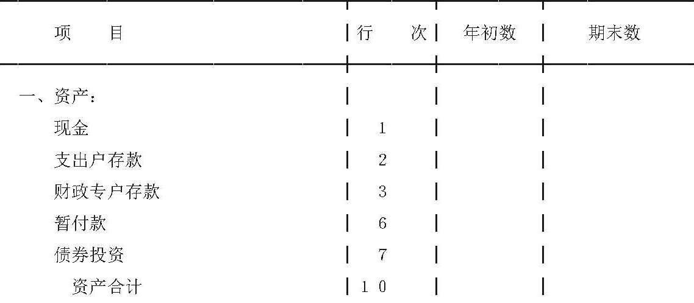
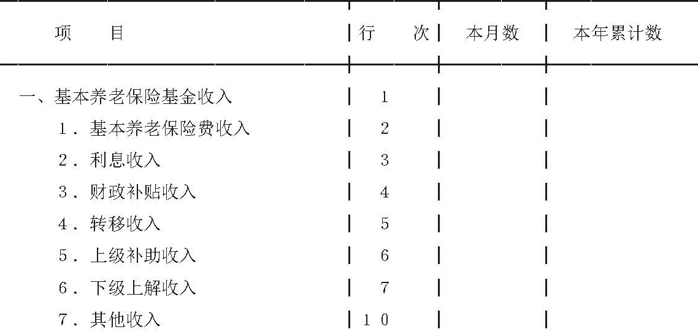
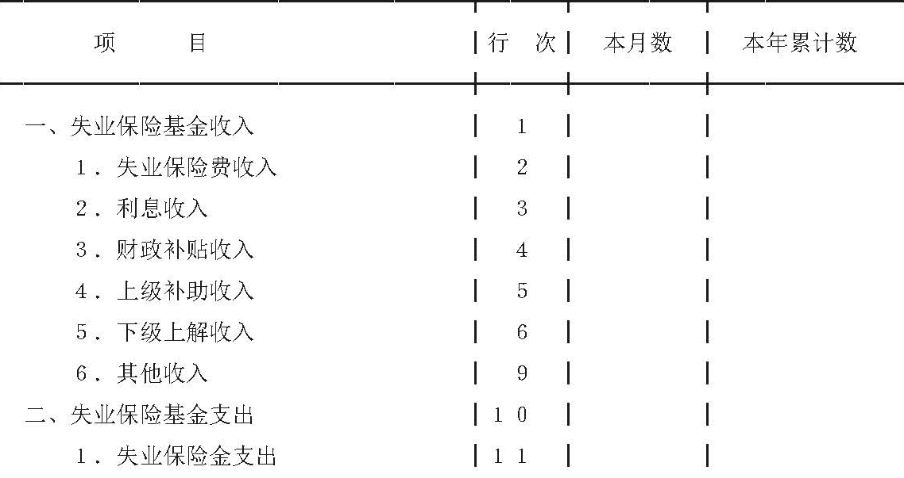
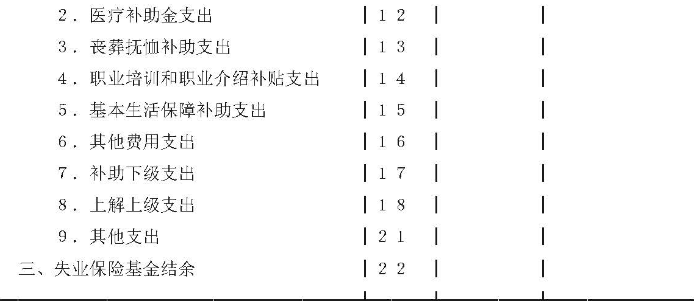
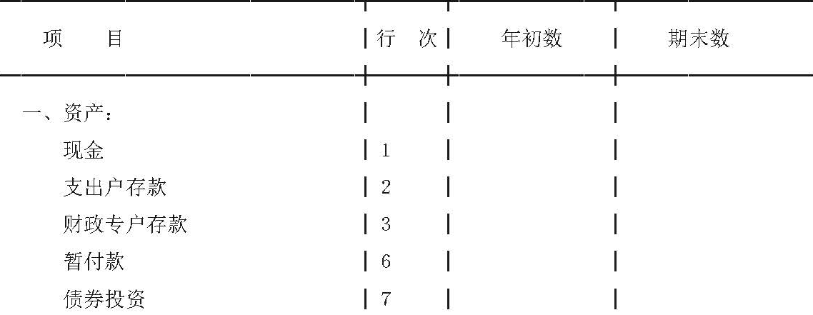
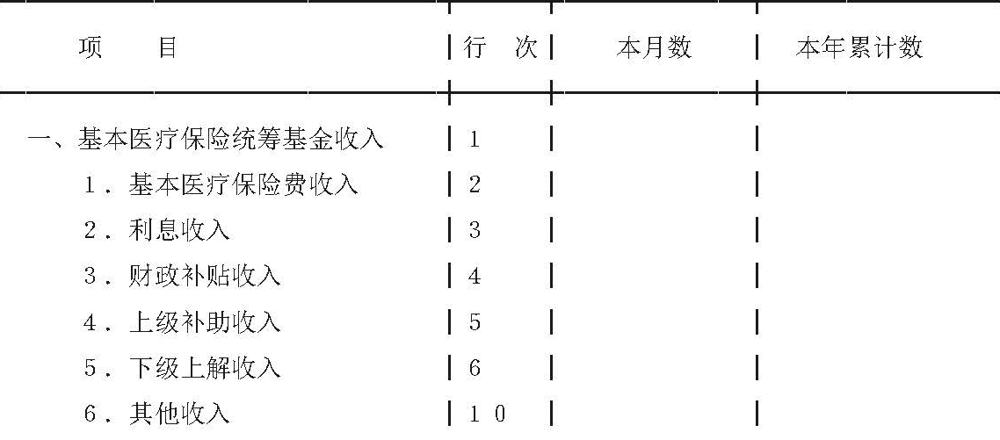

财政部
关于印发《社会保险基金会计制度》的通知
财会字〔1999〕20号
【依据《关于印发〈社会保险基金会计制度〉的通知》（财会〔2017〕28号）于2018.01.01废止；依据《关于公布废止和失效的财政规章和规范性文件目录（第十三批）的决定》（财政部令第103号）于2020.01.23废止】
各省、自治区、直辖市、计划单列市财政厅（局），新疆生产建设兵团：
为了规范和加强企业职工基本养老保险基金、失业保险基金、城镇职工基本医疗保险基金等各项社会保险基金的会计核算，维护保险对象的合法权益，根据《中华人民共和国会计法》、国家有关社会保险基金管理的法律、法规和《社会保险基金财务制度》，我们制定了《社会保险基金会计制度》，现印发给你们，请转发所属社会保险经办机构，自1999年7月1日起执行。原《企业职工养老保险基金会计核算办法》、《企业职工失业保险基金会计核算办法》和《职工医疗保险基金会计核算办法》同时废止。执行中有何问题，请及时函告我部。
附件：社会保险基金会计制度
财政部
1999年6月21日
抄送：劳动和社会保障部。
附件：
社会保险基金会计制度
第一章 总则
一、为了规范社会保险经办机构经办的社会保险基金的会计核算，特制定本制度。
二、本制度适用于中华人民共和国境内社会保险经办机构（以下简称“经办机构”）经办的企业职工基本养老保险基金（以下简称“基本养老保险基金”）、失业保险基金、城镇职工基本医疗保险基金（以下简称“基本医疗保险基金”）等社会保险基金。
各省、自治区、直辖市经政府批准建立的工伤保险基金和生育保险基金，参照本制度执行。
三、社会保险基金的会计核算应当正确划分会计期间，分期结算账目和编制会计报表。会计年度自公历1月1日起至12月31日止。年度、月份的起讫日期采用公历日期。
四、社会保险基金的会计核算采用收付实现制，会计记账采用借贷记账法。
五、社会保险基金的会计处理方法前后期应当一致，会计指标应当口径一致、不得随意变更。如确有必要变更，应当将变更的情况、变更的原因以及对收支情况的影响，在财务情况说明书中加以说明。
六、社会保险基金应当分别基本养老保险基金、失业保险基金和基本医疗保险基金设置会计科目，编制会计报表。在不影响会计核算要求和会计报表指标汇总，以及对外提供统一的会计报表的前提下，经办机构可以根据实际情况，对本制度作必要的补充，并报财政部备案。
七、经办机构应按以下规定运用社会保险基金会计科目：
（一）本制度统一规定会计科目的编号，以便于编制会计凭证，登记账簿，查阅账目，实行会计电算化，各经办机构不得随意改变或打乱重编。在某些会计科目之间留有空号，供增设会计科目之用。
（二）经办机构在填制社会保险基金的会计凭证、登记账簿时，应填列会计科目的名称，或同时填列会计科目的名称和编号；不应只填列会计科目编号，不填列会计科目名称。
八、经办机构应按以下规定编制和提供社会保险基金财务会计报告：
（一）经办机构应当按照本制度的规定编制和提供合法、真实和公允的社会保险基金财务会计报告。
（二）社会保险基金财务会计报告由会计报表、会计报表附注和财务情况说明书组成。经办机构对外提供的社会保险基金财务会计报告的内容、会计报表种类和格式等，由本制度规定；经办机构对社会保险基金进行内部管理需要的会计报表由经办机构自行规定。
（三）经办机构对外提供的社会保险基金会计报表包括：
1.基本养老保险基金会计报表：资产负债表和基本养老保险基金收支表。
2.失业保险基金会计报表：资产负债表和失业保险基金收支表。
3.基本医疗保险基金会计报表：资产负债表和基本医疗保险基金收支表。
（四）社会保险基金会计报表必须做到数字真实、内容完整、说明清楚、手续齐备、编报及时；并报送同级财政部门、主管部门和社会保险基金监督组织。
月份会计报表应于月份终了后8日内报出；年度会计报表应于年度终了后15日内报出。
（五）社会保险基金会计报表的填列，以人民币“元”为金额单位，“元”以下填至“分”。
（六）对外报出的会计报表，应依次编定页数，加具封面，装订成册，加盖公章。封面应注明经办机构名称、地址、成立年份、社会保险基金名称、报表所属年度、月份、送出日期等，并由经办机构领导和会计主管人员签名或盖章。
九、社会保险基金会计机构设置、会计人员配备、会计核算、会计监督、内部会计管理制度的要求，按照《会计基础工作规范》的规定执行。
十、本制度由中华人民共和国财政部负责解释，需要变更时，由财政部修订。
十一、本制度自1999年7月1日起施行。
第二章 基本养老保险基金会计科目和会计报表
一、会计科目表
二、会计科目使用说明
第101号科目 现金
一、本科目核算基本养老保险基金的库存现金。
二、收到缴费单位或个人以现金方式交来的基本养老保险费，借记本科目，贷记“基本养老保险费收入”科目；将现金存入银行，按规定经办机构设置社会保险基金收入户（以下简称“收入户”）的，借记“收入户存款”科目，贷记本科目，按规定经办机构不设收入户的，借记“财政专户存款”科目，贷记本科目。
从银行提取现金，借记本科目，贷记“支出户存款”科目；以现金支付基本养老保险基金时，借记“基本养老金支出”、“医疗补助金支出”、“丧葬抚恤补助支出”科目，贷记本科目。
三、本科目应设置“现金日记账”，由出纳人员根据收付款凭证，按照业务的发生顺序逐笔登记。每日终了，应计算当日的现金收入合计数、现金支出合计数和结余数，并将结余数与实际库存数核对，做到账款相符。
四、本科目期末借方余额，反映基本养老保险基金的库存现金。
第102号科目 收入户存款
一、本科目核算基本养老保险基金存入国有商业银行收入户的款项。
实行税务机关征收基本养老保险费的地区，以及按规定经办机构不设收入户的，收到的基本养老保险基金各项收入直接划入财政专户，不通过本科目核算。
二、收入户除向同级财政部门在国有商业银行设立的财政专户划转资金外，不得发生其他支付业务，其核算内容如下：
1.经办机构征收的基本养老保险费，借记本科目、“现金”科目，贷记“基本养老保险费收入”科目。将现金存入银行，借记本科目，贷记“现金”科目。
2.收到下级经办机构上解或上级经办机构下拨的基本养老保险基金，借记本科目，贷记“下级上解收入”、“上级补助收入”科目。
3.收到收入户的利息，借记本科目，贷记“利息收入”科目。
4.随异地保险对象调入本地区而由异地经办机构转入的收入（含本金和利息），借记本科目，贷记“转移收入”科目。
5.收到基本养老保险基金的滞纳金及财政部门核准的其他收入，按规定经办机构设置收入户的，借记本科目，贷记“其他收入”科目。
6.将收入户的款项划入同级财政部门在国有商业银行设立的财政专户时，借记“财政专户存款”科目，贷记本科目。
三、本科目应按开户银行设置“收入户存款日记账”，由出纳人员根据收付款凭证，按照业务的发生顺序逐笔登记，每日终了应结出余额。“收入户存款日记账”应定期与“银行对账单”核对，至少每月核对一次。月份终了，收入户存款账面结余与银行对账单余额之间如有差额，必须逐笔查明原因进行处理，并应按月编制“银行收入户存款余额调节表”，调节相符。
四、本科目月末余额必须按规定划入财政专户，划转后，本科目月末无余额。
第103号科目 支出户存款
一、本科目核算基本养老保险基金存入国有商业银行支出户的款项。
二、社会保险基金支出户（以下简称“支出户”），除接收财政专户拨付的资金及该账户的利息收入外，不得发生其他收入业务，其核算内容如下：
1.接收财政专户拨付的资金，借记本科目，贷记“财政专户存款”科目。
2.收到支出户的利息，借记本科目，贷记“利息收入”科目；划拨支出户利息收入到财政专户，借记“财政专户存款”科目，贷记本科目。
3.支付基本养老保险基金支出款项，借记“基本养老金支出”、“医疗补助金支出”、“丧葬抚恤补助支出”等科目，贷记本科目。
4.上解上级经办机构或下拨下级经办机构基本养老保险基金，借记“上解上级支出”、“补助下级支出”科目，贷记本科目或“财政专户存款”科目。
5.保险对象跨统筹地区流动而转出的基本养老保险基金，借记“转移支出”科目，贷记本科目。
三、本科目应按开户银行设置“支出户存款日记账”，由出纳人员根据收付款凭证，按照业务的发生顺序逐笔登记，每日终了应结出余额。“支出户存款日记账”应定期与“银行对账单”核对，至少每月核对一次。月份终了，支出户存款账面结余与银行对账单余额之间如有差额，必须逐笔查明原因进行处理，并应按月编制“银行支出户存款余额调节表”，调节相符。
四、本科目期末借方余额，反映支出户的款项。
第104号科目 财政专户存款
一、本科目核算基本养老保险基金存入国有商业银行财政专户的款项。
二、社会保险基金财政专户（以下简称“财政专户”）存款，其核算内容如下：
1.收到税务机关征收的基本养老保险费，借记本科目，贷记“基本养老保险费收入”科目；按规定将收入户的资金转入财政专户时，借记本科目，贷记“收入户存款”科目；经办机构不设收入户的，收到的基本养老保险费，借记本科目，贷记“基本养老保险费收入”科目。
2.收到财政专户存款利息，借记本科目，贷记“利息收入”科目；将支出户的存款利息收入按规定转入财政专户时，借记本科目，贷记“支出户存款”科目；国家债券到期收回本息或按规定转让时，按实际收到的金额，借记本科目，按债券账面价值，贷记“债券投资”科目，按其差额，贷记“利息收入”科目；收到分期付息的债券利息，借记本科目，贷记“利息收入”科目。
3.收到财政补贴收入，借记本科目，贷记“财政补贴收入”科目；收到基本养老保险基金的滞纳金及财政部门核准的其他收入，按规定经办机构不设收入户的，借记本科目，贷记“其他收入”科目。
4.按规定经办机构不设收入户的，收到下级经办机构上解和上级经办机构下拨的基本养老保险基金以及转移收入，借记本科目，贷记“下级上解收入”、“上级补助收入”、“转移收入”科目。
5.借入款项时，借记本科目，贷记“临时借款”科目。归还借款本息时，按本金数，借记“临时借款”科目，按经财政部门核准开支的利息数，借记“其他支出”科目，按本息合计，贷记本科目。
6.由财政专户向支出户拨入的资金，借记“支出户存款”科目，贷记本科目。
7.按规定用基本养老保险基金购买国家债券，按实际支付的价款，借记“债券投资”科目，贷记本科目。
三、本科目应按开户银行设置“财政专户存款日记账”，由出纳人员根据财政部门转来的财政专户缴拨凭证和加盖专用印章的原始凭证复印件，按照业务的发生顺序逐笔登记，每日终了应结出余额。“财政专户存款日记账”应定期与财政部门核对，至少每月核对一次。月份终了，基本养老保险基金存款账面结余与财政部门对账单余额之间如有差额，必须逐笔查明原因进行处理，并应按月编制“财政专户存款余额调节表”，调节相符。
四、本科目期末借方余额，反映财政专户的款项。
第111号科目 暂付款
一、本科目核算基本养老保险基金收支活动中形成的各种暂付款项。
二、发生暂付款时，借记本科目，贷记“现金”等科目。收回款项时，借记“现金”等科目，贷记本科目。
三、本科目应按暂付款种类和对方单位设置明细账。
四、本科目期末借方余额，反映尚未收回的暂付款。
第121号科目 债券投资
一、本科目核算按规定用基本养老保险基金购买的国家债券。
二、按规定用基本养老保险基金购买国家债券，按实际支付的价款，借记本科目，贷记“财政专户存款”科目。国家债券到期收回本息或按规定转让时，按实际收到的款项，借记“财政专户存款”科目，按债券账面价值，贷记本科目，按其差额，贷记“利息收入”科目。
三、本科目应按国家债券的种类设置明细账。
四、本科目期末借方余额，反映持有的债券投资价值。
第201号科目 临时借款
一、本科目核算为解决基本养老保险基金周转困难而临时借入的款项。
二、借入款项时，借记“财政专户存款”科目，贷记本科目；归还借款本息时，按本金数，借记本科目，按经财政部门核准开支的利息数，借记“其他支出”科目，按本息合计，贷记“财政专户存款”科目。
三、本科目应按债权人设置明细账。
四、本科目期末贷方余额，反映尚未归还的临时借款。
第211号科目 暂收款
一、本科目核算基本养老保险基金收支活动中形成的暂收款。
二、发生暂收款时，借记“现金”等科目，贷记本科目。偿付款项时，借记本科目，贷记“现金”等科目。
三、本科目应按暂收款的种类和往来单位设置明细账。
四、本科目期末贷方余额，反映尚未偿付的暂收款。
第301号科目 基本养老保险基金
一、本科目核算基本养老保险基金全部收入扣除全部支出后的滚存结余。
二、有条件的地区，本科目应设置“统筹养老基金结余”和“个人账户养老基金结余”两个明细科目，并在“个人账户养老基金结余”明细科目下按缴费个人设置明细账进行明细核算。
三、期末，应将“基本养老保险费收入”、“利息收入”、“财政补贴收入”、“转移收入”、“上级补助收入”、“下级上解收入”和“其他收入”科目贷方余额全部转入本科目，借记“基本养老保险费收入”、“利息收入”、“财政补贴收入”、“转移收入”、“上级补助收入”、“下级上解收入”、“其他收入”科目，贷记本科目；将“基本养老金支出”、“医疗补助金支出”、“丧葬抚恤补助支出”、“转移支出”、“补助下级支出”、“上解上级支出”和“其他支出”科目借方余额全部转入本科目，借记本科目，贷记“基本养老金支出”、“医疗补助金支出”、“丧葬抚恤补助支出”、“转移支出”、“补助下级支出”、“上解上级支出”、“其他支出”科目。
四、有条件的地区，年末，按养老基金个人账户储存额，参考银行同期存款利率计算个人账户利息时，借记本科目（统筹养老基金结余），贷记本科目（个人账户养老基金结余）。
五、本科目期末贷方余额，反映历年积存的基本养老保险基金结余。
第401号科目 基本养老保险费收入
一、本科目核算收到的由缴费单位和缴费个人按缴费基数的一定比例缴纳的基本养老保险费。
二、有条件的地区，本科目应设置“统筹养老基金收入”和“个人账户养老基金收入”两个明细科目，并在“个人账户养老基金收入”明细科目下按缴费个人设置明细账进行明细核算。
三、收到税务机关征收的基本养老保险费，借记“财政专户存款”科目，贷记本科目。收到经办机构征收的基本养老保险费，按规定经办机构设置收入户的，借记“现金”、“收入户存款”科目，贷记本科目；按规定经办机构不设收入户的，借记“现金”、“财政专户存款”科目，贷记本科目。
四、期末，应将本科目余额转入“基本养老保险基金”科目，借记本科目，贷记“基本养老保险基金”科目。结转后，本科目应无余额。
第402号科目 利息收入
一、本科目核算用基本养老保险基金购买国家债券或存入银行所取得的利息收入。
二、收到银行转来的财政专户利息，借记“财政专户存款”科目，贷记本科目；收到银行转来的收入户、支出户的利息，借记“收入户存款”、“支出户存款”科目，贷记本科目。国家债券到期收回本息或按规定转让时，按实际收到的金额，借记“财政专户存款”科目，按债券账面价值，贷记“债券投资”科目，按其差额，贷记本科目。收到分期付息的债券利息，借记“财政专户存款”科目，贷记本科目。
三、期末，应将本科目余额转入“基本养老保险基金”科目，借记本科目，贷记“基本养老保险基金”科目。结转后，本科目应无余额。
第403号科目 财政补贴收入
一、本科目核算收到的同级财政部门给予基本养老保险基金的补贴。
二、收到财政补贴时，借记“财政专户存款”科目，贷记本科目。
三、期末，应将本科目余额转入“基本养老保险基金”科目，借记本科目，贷记“基本养老保险基金”科目。结转后，本科目应无余额。
第404号科目 转移收入
一、本科目核算基本养老保险对象跨统筹地区流动而划入的基本养老保险基金。
二、随异地保险对象调入本地而由异地经办机构转入的收入（含本金和利息），按规定经办机构设置收入户的，借记“收入户存款”科目，贷记本科目；按规定经办机构不设收入户的，借记“财政专户存款”科目，贷记本科目。
三、本科目应按跨统筹地区流动的保险对象设置明细账。
四、期末，应将本科目余额转入“基本养老保险基金”科目，借记本科目，贷记“基本养老保险基金”科目。结转后，本科目应无余额。
第405号科目 上级补助收入
一、本科目核算由上级经办机构拨入的基本养老保险基金。
二、收到上级经办机构下拨的基本养老保险基金，按规定经办机构设置收入户的，借记“收入户存款”科目，贷记本科目；按规定经办机构不设收入户的，借记“财政专户存款”科目，贷记本科目。
三、期末，应将本科目余额转入“基本养老保险基金”科目，借记本科目，贷记“基本养老保险基金”科目。结转后，本科目应无余额。
第406号科目 下级上解收入
一、本科目核算由下级经办机构上解的基本养老保险基金。
二、收到下级经办机构上解的基本养老保险基金，按规定经办机构设置收入户的，借记“收入户存款”科目，贷记本科目，按规定经办机构不设收入户的，借记“财政专户存款”科目，贷记本科目。
三、期末，应将本科目余额转入“基本养老保险基金”科目，借记本科目，贷记“基本养老保险基金”科目。结转后，本科目应无余额。
第409号科目 其他收入
一、本科目核算基本养老保险基金的滞纳金及财政部门核准的其他收入。滞纳金是指因缴费单位拖欠缴纳基本养老保险费而按规定收取的款项。
二、收到滞纳金及财政部门核准的其他收入，按规定经办机构设置收入户的，借记“收入户存款”科目，贷记本科目，按规定经办机构不设收入户的，借记“财政专户存款”科目，贷记本科目。
三、期末，应将本科目余额转入“基本养老保险基金”科目，借记本科目，贷记“基本养老保险基金”科目。结转后，本科目应无余额。
第501号科目 基本养老金支出
一、本科目核算按规定应由基本养老金开支的各项支出，包括：基础性养老金、个人账户养老金、过渡性养老金以及按规定支付的离休金、退休金、退职金和补贴。
二、本科目应设置以下明细科目：
1.基础性养老金，核算按各省、自治区、直辖市或地（市）上年度职工月平均工资的20%支付给《国务院关于建立统一的企业职工养老保险制度的决定》（国发〔1997〕26号，以下简称《决定》）实施后按照统一的企业基本养老保险制度计发待遇的退休人员的基本养老金。
2.个人账户养老金，核算按缴费个人的个人账户储存额除以120支付给按照统一的企业职工基本养老保险制度计发待遇的退休人员的基本养老金，以及一次性支付给个人的个人账户储存额。本明细科目应按缴费个人设置明细账进行明细核算。
3.过渡性养老金，核算按规定支付给按照统一的企业职工基本养老保险制度计发待遇且在《决定》实施前参加工作、实施后退休的人员除基础性养老金和个人账户养老金以外的基本养老金。
4.离休金，核算按规定支付给《决定》实施前已经离休人员的生活费用。
5.退休金，核算按规定支付给《决定》实施前已经退休人员的生活费用。
6.退职金，核算按规定支付给《决定》实施前已经退职人员的生活费用。
7.补贴，核算按规定支付给《决定》实施前已经离休、退休和退职人员的各种生活补贴、物价补贴等。
三、按规定支付的基本养老金，借记本科目，贷记“现金”、“支出户存款”科目。
四、期末，应将本科目余额转入“基本养老保险基金”科目，借记“基本养老保险基金”科目，贷记本科目。结转后，本科目应无余额。
第502号科目 医疗补助金支出
一、本科目核算按规定支付给未实行医疗保险地区已纳入基本养老保险基金开支范围的离休、退休、退职人员的医疗费用。
二、按规定支付的医疗补助，借记本科目，贷记“现金”、“支出户存款”科目。
三、期末，应将本科目余额转入“基本养老保险基金”科目，借记“基本养老保险基金”科目，贷记本科目。结转后，本科目应无余额。
第503号科目 丧葬抚恤补助支出
一、本科目核算按规定支付给已纳入基本养老保险基金开支范围的离休、退休、退职人员死亡丧葬补助费用及其供养直系亲属的抚恤和生活补助费用。
二、按规定支付的丧葬抚恤补助费，借记本科目，贷记“现金”、“支出户存款”科目。
三、期末，应将本科目余额转入“基本养老保险基金”科目，借记“基本养老保险基金”科目，贷记本科目。结转后，本科目应无余额。
第511号科目 转移支出
一、本科目核算基本养老保险对象跨统筹地区流动而转出的基本养老保险基金。
二、保险对象跨统筹地区流动而转出的支出，借记本科目，贷记“支出户存款”科目。
三、本科目应按跨统筹地区流动的保险对象设置明细账。
四、期末，应将本科目余额转入“基本养老保险基金”科目，借记“基本养老保险基金”科目，贷记本科目。结转后，本科目应无余额。
第512号科目 补助下级支出
一、本科目核算上级经办机构拨付给下级经办机构的补助支出。
二、拨付给下级经办机构的基本养老保险基金，按规定经办机构设置收入户的，先将基金从财政专户拨入同级支出户，借记“支出户存款”科目，贷记“财政专户存款”科目，然后将基金从支出户拨入下级收入户，借记本科目，贷记“支出户存款”科目；按规定经办机构不设收入户的，将基金从上级财政专户直接拨入下级财政专户，借记本科目，贷记“财政专户存款”科目。
三、期末，应将本科目余额转入“基本养老保险基金”科目，借记“基本养老保险基金”科目，贷记本科目。结转后，本科目应无余额。
第513号科目 上解上级支出
一、本科目核算下级经办机构上解上级经办机构的支出。
二、下级经办机构上解上级经办机构的基本养老保险基金，按规定经办机构设置收入户的，先将基金从财政专户拨入同级支出户，借记“支出户存款”科目，贷记“财政专户存款”科目，然后将基金从支出户上解上级收入户，借记本科目，贷记“支出户存款”科目；按规定经办机构不设收入户的，将基金从财政专户直接上解上级财政专户，借记本科目，贷记“财政专户存款”科目。
三、期末，应将本科目余额转入“基本养老保险基金”科目，借记“基本养老保险基金”科目，贷记本科目。结转后，本科目应无余额。
第519号科目 其他支出
一、本科目核算经财政部门核准开支的其他非基本养老保险待遇性质的支出。
二、经财政部门批准在其他支出中列支的临时借款利息，借记本科目，贷记“财政专户存款”科目；支付的其他支出，借记本科目，贷记“支出户存款”科目。
三、期末，应将本科目余额转入“基本养老保险基金”科目，借记“基本养老保险基金”科目，贷记本科目。结转后，本科目应无余额。
三、会计报表种类及格式
会计报表种类及格式
资产负债表
| 编制单位： | ＿＿＿＿年＿＿月＿＿日 | 会养老01表
单位：元 |
|

|
基本养老保险基金收支表
| 编制单位： | ＿＿＿＿年＿＿月 | 会养老02表
单位：元 |
|

|
四、会计报表编制说明
资产负债表编制说明
（一）本表反映基本养老保险基金在月末、年末全部资产、负债及基金结存的情况。
（二）本表“年初数”栏各项数字，应根据上年末本表“期末数”所列数字填列。如果本年度资产负债表规定的各个项目名称和内容与上年度不相一致，应对上年年末资产负债表各项目的名称和数字按照本年度的规定进行调整，填入本表“年初数”栏内。
（三）本表各项目的内容和填列方法：
1.“现金”项目，反映库存现金余额。本项目应根据“现金”科目期末余额填列。
2.“支出户存款”项目，反映支出户存款余额。本项目应根据“支出户存款”科目期末余额填列。
3.“财政专户存款”项目，反映财政专户存款余额。本项目应根据“财政专户存款”科目期末余额填列。
4.“暂付款”项目，反映尚未收回的暂付款项。本项目应根据“暂付款”科目期末余额填列。
5.“债券投资”项目，反映持有的债券投资的价值。本项目应根据“债券投资”科目期末余额填列。
6.“临时借款”项目，反映尚未归还的临时借款。本项目应根据“临时借款”科目期末余额填列。
7.“暂收款”科目，反映尚未偿付的暂收款。本项目应根据“暂收款”科目期末余额填列。
8.“基本养老保险基金”项目，反映截止到本期末历年积存的基本养老保险基金结余。本项目应根据“基本养老保险基金”科目期末余额填列。
基本养老保险基金收支表编制说明
（一）本表反映基本养老保险基金在月份、年度内收入、支出及结余情况。
（二）本表“本月数”栏反映各项目的本月实际发生数，在编报年度会计报表时，将“本月数”栏改成“上年累计数”栏，填列上年全年累计实际发生数。
本表“本年累计数”栏反映各项目自年初起至本月末止的累计实际发生数。
（三）本表“本月数”栏各项目的内容及填列方法：
1.“基本养老保险费收入”项目，反映收到的由缴费单位和缴费个人按缴费基数的一定比例缴纳的基本养老保险费。本项目应根据“基本养老保险费收入”科目的贷方发生额填列。
2.“利息收入”项目，反映用基本养老保险基金购买国家债券或存入银行所取得的利息收入。本项目应根据“利息收入”科目的贷方发生额填列。
3.“财政补贴收入”项目，反映收到的同级财政部门给予基本养老保险基金的补贴。本项目应根据“财政补贴收入”科目的贷方发生额填列。
4.“转移收入”项目，反映基本养老保险对象跨统筹地区流动而划入的基本养老保险基金。本项目应根据“转移收入”科目的贷方发生额填列。
5.“上级补助收入”项目，反映由上级经办机构拨入的基本养老保险基金。本项目应根据“上级补助收入”科目的贷方发生额填列。
6.“下级上解收入”项目，反映由下级经办机构上解的基本养老保险基金。本项目应根据“下级上解收入”科目的贷方发生额填列。
7.“其他收入”项目，反映基本养老保险基金的滞纳金及财政部门核准的其他收入。本项目应根据“其他收入”科目的贷方发生额填列。
8.“基本养老金支出”项目，反映按规定应由基本养老金开支的各项支出。本项目应根据“基本养老金支出”科目的借方发生额填列。
9.“基础性养老金”项目，反映按各省、自治区、直辖市或地（市）上年度职工月平均工资的20%支付给《决定》实施后按照统一的企业职工基本养老保险制度计发待遇的退休人员的基本养老金。本项目应根据“基本养老金支出”科目所属“基础性养老金”明细科目的借方发生额填列。
10.“个人账户基金养老金”项目，反映按缴费个人的个人账户储存额除以120支付给按照统一的企业职工基本养老保险制度计发待遇的退休人员的基本养老金，以及一次性支付给个人的个人账户储存额。本项目应根据“基本养老金支出”科目所属“个人账户养老金”明细科目的借方发生额填列。
11.“过渡性养老金”项目，反映按规定支付给按照统一的企业职工基本养老保险制度计发待遇且在《决定》实施前参加工作、实施后退休的人员除基础性养老金和个人账户养老金以外的基本养老金。本项目应根据“基本养老金支出”科目所属“过渡性养老金”明细科目的借方发生额填列。
12.“离休金”项目，反映按规定支付给《决定》实施前已经离休人员的生活费用。本项目应根据“基本养老金支出”科目所属“离休金”明细科目的借方发生额填列。
13.“退休金”项目，反映按规定支付给《决定》实施前已经退休人员的生活费用。本项目应根据“基本养老金支出”科目所属“退休金”明细科目的借方发生额填列。
14.“退职金”项目，反映按规定支付给《决定》实施前已经退职人员的生活费用。本项目应根据“基本养老金支出”科目所属“退职金”明细科目的借方发生额填列。
15.“补贴”项目，反映按规定支付给《决定》实施前已经离休、退休和退职人员的各种生活补贴、物价补贴等。本项目应根据“基本养老金支出”科目所属“补贴”明细科目的借方发生额填列。
16.“医疗补助金支出”项目，反映按规定支付给未实行医疗保险地区已纳入基本养老保险基金开支范围的离休、退休、退职人员的医疗费用。本项目应根据“医疗补助金支出”科目的借方发生额填列。
17.“丧葬抚恤补助支出”项目，反映按规定支付给已纳入基本养老保险基金开支范围的离休、退休、退职人员死亡丧葬补助费用及其供养直系亲属的抚恤和生活补助费用。本项目应根据“丧葬抚恤补助支出”科目的借方发生额填列。
18.“转移支出”项目，反映基本养老保险对象跨统筹地区流动而转出的基本养老保险基金。本项目应根据“转移支出”科目的借方发生额填列。
19.“补助下级支出”项目，反映上级经办机构拨付给下级经办机构的补助支出。本项目应根据“补助下级支出”科目的借方发生额填列。
20.“上解上级支出”项目，反映下级经办机构上解上级经办机构的支出。本项目应根据“上解上级支出”科目的借方发生额填列。
21.“其他支出”项目，反映经财政部门核准开支的其他非基本养老保险待遇性质的支出。本项目应根据“其他支出”科目的借方发生额填列。
22.“基本养老保险基金结余”项目，反映基本养老保险基金的各项收入减各项支出后的结余。
第三章 失业保险基金会计科目和会计报表
一、会计科目表
二、会计科目使用说明
第101号科目 现金
一、本科目核算失业保险基金的库存现金。
二、收到缴费单位或个人以现金方式交来的失业保险费，借记本科目，贷记“失业保险费收入”科目。将现金存入银行，按规定经办机构设置收入户的，借记“收入户存款”科目，贷记本科目；按规定经办机构不设收入户的，借记“财政专户存款”科目，贷记本科目。
从银行提取现金，借记本科目，贷记“支出户存款”科目；以现金支付失业保险基金时，借记“失业保险金支出”、“医疗补助金支出”、“丧葬抚恤补助支出”、“职业培训和职业介绍补贴支出”、“基本生活保障补助支出”、“其他费用支出”等科目，贷记本科目。
三、本科目应设置“现金日记账”，由出纳人员根据收付款凭证，按照业务的发生顺序逐笔登记。每日终了，应计算当日的现金收入合计数、现金支出合计数和结余数，并将结余数与实际库存数核对，做到账款相符。
四、本科目期末借方余额，反映失业保险基金的库存现金。
第102号科目 收入户存款
一、本科目核算失业保险基金存入国有商业银行收入户的款项。
实行税务机关征收失业保险费的地区，以及按规定经办机构不设收入户的，收到的失业保险基金各项收入直接划入财政专户，不通过本科目核算。
二、收入户除向同级财政部门在国有商业银行设立的财政专户划转资金外，不得发生其他支付业务，其核算内容如下：
1.经办机构征收的失业保险费，借记本科目、“现金”科目，贷记“失业保险费收入”科目；将现金存入银行，借记本科目，贷记“现金”科目。
2.收到下级经办机构上解或上级经办机构下拨的失业保险基金，借记本科目，贷记“下级上解收入”、“上级补助收入”科目。
3.收到收入户的利息，借记本科目，贷记“利息收入”科目。
4.收到失业保险基金的滞纳金及财政部门核准的其他收入，按规定经办机构设置收入户的，借记本科目，贷记“其他收入”科目。
5.将上述款项按期划入同级财政部门在国有商业银行设立的财政专户时，借记“财政专户存款”科目，贷记本科目。
三、本科目应按开户银行设置“收入户存款日记账”，由出纳人员根据收付款凭证，按照业务的发生顺序逐笔登记，每日终了应结出余额。“收入户存款日记账”应定期与“银行对账单”核对，至少每月核对一次。月份终了，收入户存款账面结余与银行对账单余额之间如有差额，必须逐笔查明原因进行处理，并应按月编制“银行收入户存款余额调节表”，调节相符。
四、本科目月末余额必须按规定划入财政专户，划转后，本科目月末无余额。
第103号科目 支出户存款
一、本科目核算失业保险基金存入国有商业银行支出户的款项。
二、支出户除接收财政专户拨付的资金及该账户的利息收入外，不得发生其他收入业务，其核算内容如下：
1.接收财政专户拨付的资金，在收到款项时，借记本科目，贷记“财政专户存款”科目。
2.收到支出户的利息，借记本科目，贷记“利息收入”科目。划拨支出户利息收入到财政专户，借记“财政专户存款”科目，贷记本科目。
3.支付失业保险基金支出款项，借记“失业保险金支出”、“医疗补助金支出”、“丧葬抚恤补助支出”、“职业培训和职业介绍补贴支出”、“基本生活保障补助支出”、“其他费用支出”等科目，贷记本科目。
4.上解上级经办机构或下拨下级经办机构失业保险基金，借记“上解上级支出”、“补助下级支出”科目，贷记本科目或“财政专户存款”科目。
三、本科目应按开户银行设置“支出户存款日记账”，由出纳人员根据收付款凭证，按照业务的发生顺序逐笔登记，每日终了应结出余额。“支出户存款日记账”应定期与“银行对账单”核对，至少每月核对一次。月份终了，支出户存款账面结余与银行对账单余额之间如有差额，必须逐笔查明原因进行处理，并应按月编制“银行支出户存款余额调节表”，调节相符。
四、本科目期末借方余额，反映支出户的款项。
第104号科目 财政专户存款
一、本科目核算失业保险基金存入国有商业银行财政专户的款项。
二、财政专户存款的核算内容如下：
1.收到税务机关征收的失业保险费，借记本科目，贷记“失业保险费收入”科目；按规定将收入户的资金转入财政专户时，借记本科目，贷记“收入户存款”科目；经办机构不设收入户的，收到的失业保险费，借记本科目，贷记“失业保险费收入”科目。
2.收到财政专户存款利息，借记本科目，贷记“利息收入”科目；将支出户存款利息收入按规定转入财政专户时，借记本科目，贷记“支出户存款”科目；国家债券到期收回本息或按规定转让时，按实际收到的金额，借记本科目，按债券账面价值，贷记“债券投资”科目，按其差额，贷记“利息收入”科目；收到分期付息的债券利息，借记本科目，贷记“利息收入”科目。
3.收到财政补贴收入，借记本科目，贷记“财政补贴收入”科目；收到失业保险基金的滞纳金及财政部门核准的其他收入，按规定经办机构不设收入户的，借记本科目，贷记“其他收入”科目。
4.按规定经办机构不设收入户的，收到下级经办机构上解或上级经办机构下拨的失业保险基金，借记本科目，贷记“下级上解收入”、“上级补助收入”科目。
5.借入款项时，借记本科目，贷记“临时借款”科目。归还借款本息时，按本金数，借记“临时借款”科目，按经财政部门核准开支的利息数，借记“其他支出”科目，按本息合计，贷记本科目。
6.由财政专户向支出户拨入的资金，借记“支出户存款”科目，贷记本科目。
7.按规定用失业保险基金购买国家债券，按实际支付的价款，借记“债券投资”科目，贷记本科目。
三、本科目应按开户银行设置“财政专户存款日记账”，由出纳人员根据财政部门转来的财政专户缴拨凭证和加盖专用印章的原始凭证复印件，按照业务的发生顺序逐笔登记，每日终了应结出余额。“财政专户存款日记账”应定期与财政部门核对，至少每月核对一次。月份终了，失业保险基金存款账面结余与财政部门对账单余额之间如有差额，必须逐笔查明原因进行处理，并应按月编制“财政专户存款余额调节表”，调节相符。
四、本科目期末借方余额，反映财政专户的款项。
第111号科目 暂付款
一、本科目核算失业保险基金收支活动中形成的各种暂付款项。
二、发生暂付款时，借记本科目，贷记“现金”等科目。收回款项时，借记“现金”等科目，贷记本科目。
三、本科目应按暂付款种类和对方单位设置明细账。
四、本科目期末借方余额，反映尚未收回的暂付款。
第121号科目 债券投资
一、本科目核算按规定用失业保险基金购买的国家债券。
二、按规定用失业保险基金购买国家债券，按实际支付的价款，借记本科目，贷记“财政专户存款”科目。国家债券到期收回本息或按规定转让时，按实际收到的金额，借记“财政专户存款”科目，按债券账面价值，贷记本科目，按其差额，贷记“利息收入”科目。
三、本科目应按国家债券的种类设置明细账。
四、本科目期末借方余额，反映持有的债券投资价值。
第201号科目 临时借款
一、本科目核算为解决失业保险基金周转困难而临时借入的款项。
二、借入款项时，借记“财政专户存款”科目，贷记本科目；归还借款本息时，按本金数，借记本科目，按经财政部门核准开支的利息数，借记“其他支出”科目，按本息合计，贷记“财政专户存款”科目。
三、本科目应按债权人设置明细账。
四、本科目期末贷方余额，反映尚未归还的临时借款。
第211号科目 暂收款
一、本科目核算失业保险基金收支活动中形成的暂收款。
二、发生暂收款时，借记“现金”等科目，贷记本科目。偿付款项时，借记本科目，贷记“现金”等科目。
三、本科目应按暂收款的种类和往来单位设置明细账。
四、本科目期末贷方余额，反映尚未偿付的暂收款。
第301号科目 失业保险基金
一、本科目核算失业保险基金全部收入扣除全部支出后的滚存结余。
二、期末，应将“失业保险费收入”、“利息收入”、“财政补贴收入”、“上级补助收入”、“下级上解收入”和“其他收入”科目贷方余额全部转入本科目，借记“失业保险费收入”、“利息收入”、“财政补贴收入”、“上级补助收入”、“下级下解收入”、“其他收入”科目，贷记本科目；将“失业保险金支出”、“医疗补助金支出”、“丧葬抚恤补助支出”、“职业培训和职业介绍补贴支出”、“基本生活保障补助支出”、“其他费用支出”、“补助下级支出”、“上解上级支出”和“其他支出”科目借方余额全部转入本科目，借记本科目，贷记“失业保险金支出”、“医疗补助金支出”、“丧葬抚恤补助支出”、“职业培训和职业介绍补助支出”、“基本生活保障补助支出”、“其他费用支出”、“补助下级支出”、“上解上级支出”、“其他支出”科目。
三、本科目期末贷方余额，反映历年积存的失业保险基金结余。
第401号科目 失业保险费收入
一、本科目核算收到的由缴费单位和缴费个人按缴费基数的一定比例缴纳的失业保险费。
二、收到税务机关征收的失业保险费，借记“财政专户存款”科目，贷记本科目。收到经办机构征收的失业保险费，按规定经办机构设置收入户的，借记“现金”、“收入户存款”科目，贷记本科目；按规定经办机构不设收入户的，借记“现金”、“财政专户存款”科目，贷记本科目。
三、期末，应将本科目余额转入“失业保险基金”科目，借记本科目，贷记“失业保险基金”科目。结转后，本科目应无余额。
第402号科目 利息收入
一、本科目核算用失业保险基金购买国家债券或存入银行所取得的利息收入。
二、收到银行转来的财政专户利息，借记“财政专户存款”科目，贷记本科目；收到银行转来的收入户、支出户的利息，借记“收入户存款”、“支出户存款”科目，贷记本科目。国家债券到期收回本息或按规定转让时，按实际收到的金额，借记“财政专户存款”科目，按债券账面价值，贷记“债券投资”科目，按其差额，贷记本科目。收到分期付息的债券利息，借记“财政专户存款”科目，贷记本科目。
三、期末，应将本科目余额转入“失业保险基金”科目，借记本科目，贷记“失业保险基金”科目。结转后，本科目应无余额。
第403号科目 财政补贴收入
一、本科目核算收到的同级财政部门给予失业保险基金的补贴。
二、收到财政补贴时，借记“财政专户存款”科目，贷记本科目。
三、期末，应将本科目余额转入“失业保险基金”科目，借记本科目，贷记“失业保险基金”科目。结转后，本科目应无余额。
第404号科目 上级补助收入
一、本科目核算由上级经办机构拨入的失业保险基金。
二、收到上级经办机构下拨的失业保险基金，按规定经办机构设置收入户的，借记“收入户存款”科目，贷记本科目；按规定经办机构不设收入户的，借记“财政专户存款”科目，贷记本科目。
三、期末，应将本科目余额转入“失业保险基金”科目，借记本科目，贷记“失业保险基金”科目。结转后，本科目应无余额。
第405号科目 下级上解收入
一、本科目核算由下级经办机构上解的失业保险基金。
二、收到下级经办机构上解的失业保险基金，按规定经办机构设置收入户的，借记“收入户存款”科目，贷记本科目；按规定经办机构不设收入户的，借记“财政专户存款”科目，贷记本科目。
三、期末，应将本科目余额转入“失业保险基金”科目，借记本科目，贷记“失业保险基金”科目。结转后，本科目应无余额。
第409号科目 其他收入
一、本科目核算失业保险基金的滞纳金及经财政部门核准的其他收入。滞纳金是指因缴费单位拖欠缴纳失业保险费而按规定收取的款项。
二、收到滞纳金及财政部门核准的其他收入，按规定经办机构设置收入户的，借记“收入户存款”科目，贷记本科目，按规定经办机构不设收入户的，借记“财政专户存款”科目，贷记本科目。
三、期末，应将本科目余额转入“失业保险基金”科目，借记本科目，贷记“失业保险基金”科目。结转后，本科目应无余额。
第501号科目 失业保险金支出
一、本科目核算按规定支付给失业人员在失业期间的基本生活费用。
二、按规定支出的失业保险金，借记本科目，贷记“现金”、“支出户存款”科目。
三、期末，应将本科目余额转入“失业保险基金”科目，借记“失业保险基金”科目，贷记本科目。结转后，本科目应无余额。
第502号科目 医疗补助金支出
一、本科目核算按规定支付给失业人员在领取失业保险金期间的医疗费用。
二、按规定支付的医疗补助，借记本科目，贷记“现金”、“支出户存款”科目。
三、期末，应将本科目余额转入“失业保险基金”科目，借记“失业保险基金”科目，贷记本科目。结转后，本科目应无余额。
第503号科目 丧葬抚恤补助支出
一、本科目核算按规定支付给在领取失业保险金期间死亡的失业人员的丧葬补助费用及由其供养的配偶、直系亲属的抚恤金。
二、按规定支付的丧葬抚恤补助费，借记本科目，贷记“现金”、“支出户存款”科目。
三、期末，应将本科目余额转入“失业保险基金”科目，借记“失业保险基金”科目，贷记本科目。结转后，本科目应无余额。
第504号科目 职业培训和职业介绍补贴支出
一、本科目核算按规定支付给失业人员在领取失业保险金期间接受职业培训、职业介绍的补贴。
二、按规定支付的职业培训介绍补贴，借记本科目，贷记“现金”、“支出户存款”科目。
三、期末，应将本科目余额转入“失业保险基金”科目，借记“失业保险基金”科目，贷记本科目。结转后，本科目应无余额。
第505号科目 基本生活保障补助支出
一、本科目核算按规定从失业保险基金中调剂用于进入企业再就业服务中心的国有企业下岗职工基本生活保障的支出。
二、按规定支付的国有企业下岗职工基本生活保障补助，借记本科目，贷记“现金”、“支出户存款”科目。
三、期末，应将本科目余额转入“失业保险基金”科目，借记“失业保险基金”科目，贷记本科目。结转后，本科目应无余额。
第509号科目 其他费用支出
一、本科目核算支付给农民合同制工人的一次性生活补助金及国家规定的其他费用。农民合同制工人一次性生活补助金，是指一次性支付给合同期满不再续订或者提前解除劳动合同的农民合同制工人的生活补助费。
二、按规定支付的农民合同制工人一次性生活补助金及国家规定的其他费用，借记本科目，贷记“现金”、“支出户存款”科目。
三、期末，应将本科目余额转入“失业保险基金”科目，借记“失业保险基金”科目，贷记本科目。结转后，本科目应无余额。
第511号科目 补助下级支出
一、本科目核算上级经办机构拨付给下级经办机构的补助支出。
二、拨付给下级经办机构的失业保险基金，按规定经办机构设置收入户的，先将基金从财政专户拨入同级支出户，借记“支出户存款”科目，贷记“财政专户存款”科目，然后将基金从支出户拨入下级收入户，借记本科目，贷记“支出户存款”科目；按规定经办机构不设收入户的，将基金从上级财政专户直接拨入下级财政专户，借记本科目，贷记“财政专户存款”科目。
三、期末，应将本科目余额转入“失业保险基金”科目，借记“失业保险基金”科目，贷记本科目。结转后，本科目应无余额。
第512号科目 上解上级支出
一、本科目核算下级经办机构上解上级经办机构的支出。
二、上解上级经办机构的失业保险基金，按规定经办机构设置收入户的，先将基金从财政专户拨入同级支出户，借记“支出户存款”科目，贷记“财政专户存款”科目，然后将基金从支出户拨入上级收入户，借记本科目，贷记“支出户存款”科目；按规定经办机构不设收入户的，将基金从财政专户直接上解上级财政专户，借记本科目，贷记“财政专户存款”科目。
三、期末，应将本科目余额转入“失业保险基金”科目，借记“失业保险基金”科目，贷记本科目。结转后，本科目应无余额。
第519号科目 其他支出
一、本科目核算经财政部门核准开支的其他非失业保险待遇性质的支出。
二、经财政部门批准在其他支出列支的临时借款利息，借记本科目，贷记“财政专户存款”科目；支付的其他支出，借记本科目，贷记“支出户存款”科目。
三、期末，应将本科目余额转入“失业保险基金”科目，借记“失业保险基金”科目，贷记本科目。结转后，本科目应无余额。
三、会计报表种类和格式
会计报表种类及格式
资产负债表
| 编制单位： | ＿＿＿＿年＿＿月＿＿日 | 会失业01表
单位：元 |
|
|
失业保险基金收支表
| 编制单位： | ＿＿＿＿年＿＿月 | 会失业02表
单位：元 |
|


|
四、会计报表编制说明
资产负债表编制说明
（一）本表反映失业保险基金在月末、年末全部资产、负债及基金结存的情况。
（二）本表“年初数”栏各项数字，应根据上期末本表“期末数”所列数字填列。如果本年度资产负债表规定的各个项目名称和内容与上年度不相一致，应对上年年末资产负债表各项目的名称和数字按照本年度的规定进行调整，填入本表“年初数”栏内。
（三）本表各项目的内容和填列方法：
1.“现金”项目，反映失业保险基金库存现金余额。本项目应根据“现金”科目期末余额填列。
2.“支出户存款”项目，反映支出户存款余额。本项目应根据“支出户存款”科目期末余额填列。
3.“财政专户存款”项目，反映财政专户存款余额。本项目应根据“财政专户存款”科目期末余额填列。
4.“暂付款”项目，反映尚未收回的暂付款项。本项目应根据“暂付款”科目期末余额填列。
5.“债券投资”项目，反映持有的债券投资的价值。本项目应根据“债券投资”科目期末余额填列。
6.“临时借款”项目，反映尚未归还的临时借款。本项目应根据“临时借款”科目期末余额填列。
7.“暂收款”科目，反映尚未偿付的暂收款项。本项目应根据“暂收款”科目期末余额填列。
8.“失业保险基金”项目，反映截止到本期末历年积存的失业保险基金结余。本项目应根据“失业保险基金”科目期末余额填列。
失业保险基金收支表编制说明
（一）本表反映失业保险基金在月份、年度内收入、支出及结余情况。
（二）本表“本月数”栏反映各项目的本月实际发生数，在编报年度报表时，将“本月数”栏改成“上年累计数”栏，填列上年全年累计实际发生数。
本表“本年累计数”栏反映各项目自年初起至本月末止的累计实际发生数。
（三）本表“本月数”栏各项目的内容及填列方法：
1.“失业保险费收入”项目，反映收到的由缴费单位和缴费个人按缴费基数的一定比例缴纳的失业保险费。本项目应根据“失业保险费收入”科目贷方发生额填列。
2.“利息收入”项目，反映用失业保险基金购买国家债券或存入银行所取得的利息收入。本项目应根据“利息收入”科目贷方发生额填列。
3.“财政补贴收入”项目，反映收到的同级财政部门给予失业保险基金的补贴。本项目应根据“财政补贴收入”科目贷方发生额填列。
4.“上级补助收入”项目，反映由上级经办机构拨入的失业保险基金。本项目应根据“上级补助收入”科目贷方发生额填列。
5.“下级上解收入”项目，反映由下级经办机构上解的失业保险基金。本项目应根据“下级上解收入”科目贷方发生额填列。
6.“其他收入”项目，反映失业保险基金的滞纳金及经财政部门核准的其他收入。本项目应根据“其他收入”科目贷方发生额填列。
7.“失业保险金支出”项目，反映按规定支付给失业人员在失业期间的基本生活费用。本项目应根据“失业保险金支出”科目借方发生额填列。
8.“医疗补助金支出”项目，反映按规定支付给失业人员在领取失业保险金期间的医疗费用。本项目应根据“医疗补助金支出”科目借方发生额填列。
9.“丧葬抚恤补助支出”项目，反映按规定支付给在领取失业保险金期间死亡的失业人员的丧葬补助费用及由其供养的配偶、直系亲属的抚恤金。本项目应根据“丧葬抚恤补助支出”科目借方发生额填列。
10.“职业培训和职业介绍补贴支出”项目，反映支付给失业人员在领取失业保险金期间接受职业培训、职业介绍的补贴。本项目应根据“职业培训和职业介绍补贴支出”科目借方发生额填列。
11.“基本生活保障补助支出”项目，反映按规定从失业保险基金中调剂用于进入再就业服务中心的国有企业下岗职工基本生活保障的支出。本项目应根据“基本生活保障补助支出”科目借方发生额填列。
12.“其他费用支出”项目，反映支付给农民合同制工人一次性生活补助及国家规定的其他费用。本项目应根据“其他费用支出”科目借方发生额填列。
13.“补助下级支出”项目，反映经办机构拨付下级经办机构的补助支出。本项目应根据“补助下级支出”科目借方发生额填列。
14.“上解上级支出”项目，反映经办机构上解上级经办机构的支出。本项目应根据“上解上级支出”科目借方发生额填列。
15.“其他支出”项目，反映经财政部门核准开支的其他非失业保险待遇性质的支出。本项目应根据“其他支出”科目借方发生额填列。
16.“失业保险基金结余”项目，反映本期失业保险基金的各项收入减去各项支出后的结余。本项目等于失业保险基金收入减去失业保险基金支出。
第四章 基本医疗保险基金会计科目和会计报表
一、会计科目表
二、会计科目使用说明
第101号科目 现金
一、本科目核算基本医疗保险基金的库存现金。
二、收到缴费单位或个人以现金方式交来的基本医疗保险费，借记本科目，贷记“基本医疗保险统筹基金收入”、“医疗保险个人账户基金收入”科目；将现金存入银行，按规定经办机构设置收入户的，借记“收入户存款”科目，贷记本科目；按规定经办机构不设收入户的，借记“财政专户存款”科目，贷记本科目。
从银行提取现金，借记本科目，贷记“支出户存款”科目；以现金支付基本医疗保险基金，借记“基本医疗保险统筹基金支出”、“医疗保险个人账户基金支出”科目，贷记本科目。
三、本科目应设置“现金日记账”，由出纳人员根据收付款凭证，按照业务的发生顺序逐笔登记。每日终了，应计算当日的现金收入合计数、现金支出合计数和结余数，并将结余数与实际库存数核对，做到账款相符。
四、本科目期末借方余额，反映基本医疗保险基金的库存现金。
第102号科目 收入户存款
一、本科目核算基本医疗保险基金存入国有商业银行收入户的款项。
实行税务机关征收基本医疗保险费的地区，以及按规定经办机构不设收入户的，收到基本医疗保险基金的各项收入直接划入财政专户，不通过本科目核算。
二、收入户除向同级财政部门在国有商业银行设立的财政专户划转资金外，不得发生其他支付业务，其核算内容如下：
1.经办机构征收的基本医疗保险费，借记本科目、“现金”科目，贷记“基本医疗保险统筹基金收入”、“医疗保险个人账户基金收入”或“待转保险费收入”科目。
2.收到收入户的利息，借记本科目，贷记“待转利息收入”科目。
3.收到转移收入，借记本科目，贷记“医疗保险个人账户基金收入”科目。
4.收到上级补助收入、下级上解收入，借记本科目，贷记“基本医疗保险统筹基金收入”科目。
5.收到其他收入，借记本科目，贷记“基本医疗保险统筹基金收入”科目。
6.按规定将收入户的资金划入同级财政部门在国有商业银行设立的财政专户，借记“财政专户存款”科目，贷记本科目。
三、本科目应按开户银行设置“收入户存款日记账”，由出纳人员根据收付款凭证，按照业务的发生顺序逐笔登记，每日终了应结出余额。“收入户存款日记账”应定期与“银行对账单”核对，至少每月核对一次。月份终了，收入户存款账面结余与银行对账单余额之间如有差额，必须逐笔查明原因进行处理，并应按月编制“银行收入户存款余额调节表”，调节相符。
四、本科目月末余额必须按规定划入财政专户，划转后，本科目月末应无余额。
第103号科目 支出户存款
一、本科目核算基本医疗保险基金存入国有商业银行支出户的款项。
二、支出户除接收财政专户拨付的资金及该账户的利息收入外，不得发生其他收入业务，其核算内容如下：
1.接收财政专户拨入的资金，借记本科目，贷记“财政专户存款”科目。
2.收到支出户的利息，借记本科目，贷记“待转利息收入”科目；划拨支出户的利息到财政专户，借记“财政专户存款”科目，贷记本科目。
3.支付医疗保险待遇支出，借记“基本医疗保险统筹基金支出”、“医疗保险个人账户基金支出”科目，贷记本科目、“现金”科目。
4.支付转移支出，借记“医疗保险个人账户基金支出”科目，贷记本科目。
5.补助下级支出，按规定经办机构设置收入户的，先将基金从财政专户拨入同级支出户，借记本科目，贷记“财政专户存款”科目，然后将基金从支出户拨入下级收入户，借记“基本医疗保险统筹基金支出”科目，贷记本科目。
6.上解上级支出，按规定经办机构设置收入户的，先将基金从财政专户拨入同级支出户，借记本科目，贷记“财政专户存款”科目，然后将基金从支出户上解上级收入户，借记“基本医疗保险统筹基金支出”科目，贷记本科目。
7.经财政部门核准在其他支出列支的临时借款利息支出，借记“基本医疗保险统筹基金支出”科目，贷记“财政专户存款”科目，支付其他支出，借记“基本医疗保险统筹基金支出”科目，贷记本科目。
三、本科目应按开户银行设置“支出户存款日记账”，由出纳人员根据收付款凭证，按照业务的发生顺序逐笔登记，每日终了应结出余额。“支出户存款日记账”应定期与“银行对账单”核对，至少每月核对一次。月份终了，支出户存款账面结余与银行对账单余额之间如有差额，必须逐笔查明原因进行处理，并应按月编制“银行支出户存款余额调节表”，调节相符。
四、本科目期末借方余额，反映支出户的款项。
第104号科目 财政专户存款
一、本科目核算基本医疗保险基金存入国有商业银行财政专户的款项。
二、财政专户存款的核算内容如下：
1.按规定将收入户的资金划入财政专户，借记本科目，贷记“收入户存款”科目。
2.收到税务机关征收的基本医疗保险费，借记本科目，贷记“基本医疗保险统筹基金收入”、“医疗保险个人账户基金收入”或“待转保险费收入”科目；收到经办机构征收的基本医疗保险费，按规定经办机构设置收入户的，借记“现金”、“收入户存款”科目，贷记“基本医疗保险统筹基金收入”、“医疗保险个人账户基金收入”或“待转保险费收入”科目；按规定经办机构不设收入户的，借记本科目，贷记“基本医疗保险统筹基金收入”、“医疗保险个人账户基金收入”或“待转保险费收入”科目。
3.收到财政专户存款利息，借记本科目，贷记“待转利息收入”科目；将支出户的存款利息按规定转入财政专户，借记本科目，贷记“支出户存款”科目；国家债券到期收回本息或按规定转让时，按实际收到的金额，借记本科目，按债券账面价值，贷记“债券投资”科目，按其差额，贷记“待转利息收入”科目。收到分期付息的债券利息，借记本科目，贷记“待转利息收入”科目。
4.收到财政补贴收入，借记本科目，贷记“基本医疗保险统筹基金收入”科目。
5.收到转移收入，按规定经办机构设置收入户的，借记“收入户存款”科目，贷记“医疗保险个人账户基金收入”科目；按规定经办机构不设收入户的，借记本科目，贷记“医疗保险个人账户基金收入”科目。
6.收到下级上解收入或上级补助收入，按规定经办机构设置收入户的，借记“收入户存款”科目，贷记“基本医疗保险统筹基金收入”科目；按规定经办机构不设收入户的，借记本科目，贷记“基本医疗保险统筹基金收入”科目。
7.收到其他收入，按规定经办机构设置收入户的，借记“现金”、“收入户存款”科目，贷记“基本医疗保险统筹基金收入”科目；按规定经办机构不设收入户的，借记本科目、“现金”，贷记“基本医疗保险统筹基金收入”科目。
8.临时借入款项，借记本科目，贷记“临时借款”科目；归还借款本息时，按本金数，借记“临时借款”科目，按经财政部门核准开支的利息支出，借记“基本医疗保险统筹基金支出——其他支出”科目，按本息合计，贷记本科目。
9.由财政专户向支出户拨入的资金，借记“支出户存款”科目，贷记本科目。
10.按规定用基本医疗保险基金购买国家债券，按实际支付的价款，借记“债券投资”科目，贷记本科目。
三、本科目应按开户银行设置“财政专户存款日记账”，由出纳人员根据财政部门转来的财政专户缴拨凭证和加盖专用印章的原始凭证复印件，按照业务的发生顺序逐笔登记，每日终了应结出余额。“财政专户存款日记账”应定期与财政部门核对，至少每月核对一次。月份终了，基本医疗保险基金存款账面结余与财政部门对账单余额之间如有差额，必须逐笔查明原因进行处理，并应按月编制“财政专户存款余额调节表”，调节相符。
四、本科目期末借方余额，反映财政专户的款项。
第111号科目 暂付款
一、本科目核算基本医疗保险基金收支活动中形成的各种暂付款项。
按规定基本医疗保险实行定点医疗机构（包括中医医院，下同）和定点药店管理，经办机构向定点医疗机构和定点药店的预付款，也在本科目核算。
二、经办机构向定点医疗机构和定点药店预付的医疗费，借记本科目，贷记“支出户存款”科目；经办机构定期与定点医疗机构和定点药店结算医疗费款项时，根据审核的医疗保险享受人员的医疗费支出数额，借记“基本医疗保险统筹基金支出”、“医疗保险个人账户基金支出”科目，贷记本科目。支付的其他暂付款，借记本科目，贷记有关科目；收回的其他暂付款，借记有关科目，贷记本科目。
三、本科目应按暂付款种类和对方单位设置明细账。
四、本科目期末借方余额，反映尚未收回的暂付款。
第121号科目 债券投资
一、本科目核算按规定用基本医疗保险基金购买的国家债券。
二、按规定用基本医疗保险基金购买国家债券，按实际支付的价款，借记本科目，贷记“财政专户存款”科目。国家债券到期收回本息或按规定转让时，按实际收到的金额，借记“财政专户存款”科目，按债券账面价值，贷记本科目，按其差额，贷记“待转利息收入”科目。
三、本科目应按国家债券的种类设置明细账。
四、本科目期末借方余额，反映持有的债券投资价值。
第201号科目 临时借款
一、本科目核算为解决医疗保险基金周转困难临时借入的款项。
二、借入款项时，借记“财政专户存款”科目，贷记本科目；归还借款本息时，按本金数，借记本科目，按经财政部门核准开支的利息支出，借记“基本医疗保险统筹基金支出——其他支出”科目，按本息合计，贷记“财政专户存款”科目。
三、本科目应按债权人设置明细账。
四、本科目期末贷方余额，反映尚未归还的临时借款。
第211号科目 暂收款
一、本科目核算基本医疗保险基金收支活动中形成的暂收款。
二、收到款项时，借记“现金”等科目，贷记本科目。偿付款项时，借记本科目，贷记“现金”等科目。
三、本科目应按暂收款的种类和往来单位设置明细账。
四、本科目期末贷方余额，反映尚未偿付的暂收款。
第301号科目 基本医疗保险统筹基金
一、本科目核算基本医疗保险统筹基金全部收入扣除全部支出后的滚存结余。
二、期末，将“基本医疗保险统筹基金收入”科目贷方余额转入本科目，借记“基本医疗保险统筹基金收入”科目，贷记本科目；将“基本医疗保险统筹基金支出”科目借方余额转入本科目，借记本科目，贷记“基本医疗保险统筹基金支出”科目。
三、本科目期末贷方余额，反映历年积存的基本医疗保险统筹基金结余。
第302号科目 医疗保险个人账户基金
一、本科目核算医疗保险个人账户基金全部收入扣除全部支出后的滚存结余。
二、期末，将“医疗保险个人账户基金收入”科目贷方余额转入本科目，借记“医疗保险个人账户基金收入”科目，贷记本科目；将“医疗保险个人账户基金支出”科目借方余额转入本科目，借记本科目，贷记“医疗保险个人账户基金支出”科目。
三、本科目应按参加基本医疗保险的每一位职工设置“个人账户”明细账。
四、本科目期末贷方余额，反映历年积存的医疗保险个人账户基金结余。
第401号科目 基本医疗保险统筹基金收入
一、本科目核算按规定记入基本医疗保险统筹基金的各项收入，包括基本医疗保险费收入、利息收入、财政补贴收入、上级补助收入、下级上解收入和其他收入。
二、本科目应设置以下六个明细科目：
1.基本医疗保险费收入，核算税务机关或经办机构向缴费单位征收的医疗保险费，按规定记入基本医疗保险统筹基金的部分。
2.利息收入，核算用基本医疗保险基金购买国家债券或存入银行取得的利息收入，按规定记入基本医疗保险统筹基金的部分。
3.财政补贴收入，核算同级财政给予基本医疗保险基金的补贴。
4.上级补助收入，核算下级经办机构接收上级经办机构拨付的基本医疗保险基金补助收入。
5.下级上解收入，核算上级经办机构接收下级经办机构上解的基本医疗保险基金收入。
6.其他收入，核算基本医疗保险基金的滞纳金及其他经财政部门核准的收入。滞纳金是指因用人单位拖欠缴纳基本医疗保险费而按规定收取的款项。
三、按规定记入基本医疗保险统筹基金的各项收入，分别以下情况核算：
1.收到税务机关征收的基本医疗保险费，将其中按规定记入基本医疗保险统筹基金的基本医疗保险费记入本科目，借记“财政专户存款”科目，贷记本科目。
收到经办机构征收的基本医疗保险费，将其中按规定记入基本医疗保险统筹基金的基本医疗保险费记入本科目，按规定经办机构设置收入户的，借记“现金”、“收入户存款”科目，贷记本科目；按规定经办机构不设收入户的，借记“现金”、“财政专户存款”科目，贷记本科目。
2.税务机关征收的基本医疗保险费，对于收到时尚未确定归属于基本医疗保险统筹基金或医疗保险个人账户基金的，暂记入“待转保险费收入”科目，借记“财政专户存款”科目，贷记“待转保险费收入”科目；待确定归属时，再自“待转保险费收入”科目转入相关收入科目，借记“待转保险费收入”科目，贷记本科目和“医疗保险个人账户基金收入”科目。
经办机构征收的基本医疗保险费，对于收到时尚未确定归属于基本医疗保险统筹基金或医疗保险个人账户基金的，暂记入“待转保险费收入”科目，按规定经办机构设置收入户的，借记“现金”、“收入户存款”科目，贷记“待转保险费收入”科目；按规定经办机构不设收入户的，借记“现金”、“财政专户存款”科目，贷记“待转利息收入”科目。待确定归属时，再自“待转保险费收入”科目转入相关收入科目，借记“待转保险费收入”科目，贷记本科目和“医疗保险个人账户基金收入”科目。
3.对于用基本医疗保险基金购买国家债券或存入银行取得的利息收入，收到时先在“待转利息收入”科目进行归集，按期分配计入基本医疗保险统筹基金和医疗保险个人账户基金时，再自“待转利息收入”科目转入有关收入科目。分配记入基本医疗保险统筹基金的利息，借记“待转利息收入”科目，贷记本科目。
4.收到财政补贴收入，借记“财政专户存款”科目，贷记本科目。
5.收到上级补助收入、下级上解收入，按规定经办机构设置收入户的，借记“收入户存款”科目，贷记本科目；按规定经办机构不设收入户的，借记“财政专户存款”科目，贷记本科目。
6.收到其他收入，按规定经办机构设置收入户的，借记“现金”、“收入户存款”科目，贷记本科目；按规定经办机构不设收入户的，借记“现金”、“财政专户存款”科目，贷记本科目。
四、期末，应将本科目贷方余额全部转入“基本医疗保险统筹基金”科目，借记本科目，贷记“基本医疗保险统筹基金”科目。结转后，本科目应无余额。
第402号科目 医疗保险个人账户基金收入
一、本科目核算按规定记入医疗基金医疗保险个人账户基金的各项收入，包括基本医疗保险费收入、利息收入、转移收入。
二、本科目应设置以下三个明细科目：
1.基本医疗保险费收入，核算税务机关或经办机构向缴费单位或个人征收的基本医疗保险费，按规定记入医疗保险个人账户基金的部分。
2.利息收入，核算用基本医疗保险基金购买国家债券或存入银行取得的利息收入，按规定记入医疗保险个人账户基金的部分。
3.转移收入，核算保险对象跨统筹地区流动，其个人基本医疗保险基金随同转入的收入。
三、按规定记入医疗保险个人账户基金的各项收入，分别以下情况核算：
1.收到税务机关征收的基本医疗保险费，将其中按规定记入个人账户的基本医疗保险费记入本科目，借记“财政专户存款”科目，贷记本科目。
收到经办机构征收的基本医疗保险费，将其中按规定记入个人账户的基本医疗保险费记入本科目，按规定经办机构设置收入户的，借记“现金”、“收入户存款”科目，贷记本科目；按规定经办机构不设收入户的，借记“现金”、“财政专户存款”科目，贷记本科目。
2.税务机关征收的基本医疗保险费，对于收到时尚未确定归属于基本医疗保险统筹基金或医疗保险个人账户基金的，暂记入“待转保险费收入”科目，借记“财政专户存款”科目，贷记“待转保险费收入”科目；待确定归属时，再自“待转保险费收入”科目转入相关收入科目，借记“待转保险费收入”科目，贷记本科目和“基本医疗保险统筹基金收入”科目。
经办机构征收的基本医疗保险费，对于收到时尚未确定归属于基本医疗保险统筹基金或医疗保险个人账户基金的，暂记入“待转保险费收入”科目，按规定经办机构设置收入户的，借记“现金”、“收入户存款”科目，贷记“待转保险费收入”科目；按规定经办机构不设收入户的，借记“现金”、“财政专户存款”科目，贷记“待转保险费收入”科目。待确定归属时，再自“待转保险费收入”科目转入相关收入科目，借记“待转保险费收入”科目，贷记本科目和“基本医疗保险统筹基金收入”科目。
3.对于用基本医疗保险基金购买国家债券或存入银行取得的利息收入，收到时先在“待转利息收入”科目进行归集，按期分配计入基本医疗保险统筹基金和医疗保险个人账户基金时，再自“待转利息收入”科目转入有关收入科目。分配记入个人账户的利息，借记“待转利息收入”科目，贷记本科目。
4.随异地保险对象调入本地而由异地经办机构转入的收入（含本金和利息），按规定经办机构设置收入的，借记“收入户存款”科目，贷记本科目；按规定经办机构不设收入户的，借记“财政专户存款”科目，贷记本科目。
四、本科目应按收入种类和参加医疗保险的每一位职工设置“个人账户”明细账。
五、期末，应将本科目贷方余额全部转入“医疗保险个人账户基金”科目，借记本科目，贷记“医疗保险个人账户基金”科目。结转后，本科目应无余额。
第411号科目 待转保险费收入
一、本科目核算收到时尚未确定归属于基本医疗保险统筹基金和医疗保险个人账户基金的基本医疗保险费收入。
二、税务机关征收的基本医疗保险费，对于收到时尚未确定归属于基本医疗保险统筹基金或医疗保险个人账户基金的，暂记入本科目，借记“财政专户存款”科目，贷记本科目；待确定归属时，再自本科目转入相关收入科目，借记“待转保险费收入”科目，贷记“基本医疗保险统筹基金收入”、“医疗保险个人账户基金收入”科目。
经办机构征收的基本医疗保险费，对于收到时尚未确定归属于基本医疗保险统筹基金或医疗保险个人账户基金的，暂记入本科目，按规定经办机构设置收入户的，借记“现金”、“收入户存款”科目，贷记本科目；按规定经办机构不设收入户的，借记“现金”、“财政专户存款”科目，贷记本科目。待确定归属时，再自本科目转入相关收入科目，借记本科目，贷记“基本医疗保险统筹基金收入”、“医疗保险个人账户基金收入”科目。
年末，将尚未确定归属的基本医疗保险费，根据经验比例划分基本医疗保险统筹基金和医疗保险个人账户基金，自本科目结转到“基本医疗保险统筹基金收入”和“医疗保险个人账户基金收入”科目，借记本科目，贷记“基本医疗保险统筹基金收入”、“医疗保险个人账户基金收入”科目；下年初再作相反分录予以转回。
三、本科目月末余额，反映尚未确定归属于基本医疗保险统筹基金或医疗保险个人账户基金的基本医疗保险费。年度终了，本科目应无余额。
第412号科目 待转利息收入
一、本科目核算取得的尚未分配计入基本医疗保险统筹基金和医疗保险个人账户基金的利息收入。
二、用基本医疗保险基金购买国家债券或存入银行所取得的利息收入，先在本科目进行归集，然后按期分配计入基本医疗保险统筹基金和医疗保险个人账户基金。
收到财政专户的利息，借记“财政专户存款”科目，贷记本科目；收到收入户、支出户的利息，借记“收入户存款”、“支出户存款”科目，贷记本科目。国家债券到期收回本息或转让时，按实际收到的金额，借记“财政专户存款”科目，按债券账面价值，贷记“债券投资”科目，按其差额，贷记本科目。收到分期付息债券利息，借记“财政专户存款”科目，贷记本科目。
年末，将取得的各项利息收入先按规定的银行计息方法计算医疗保险个人账户基金利息，自本科目转入医疗保险个人账户基金，借记本科目，贷记“医疗保险个人账户基金收入”科目；然后将取得的各项利息收入扣除计入医疗保险个人账户基金的利息，剩余部分自本科目转入基本医疗保险统筹基金，借记本科目，贷记“基本医疗保险统筹基金收入”科目。
三、本科目月末余额，反映尚未分配计入基本医疗保险统筹基金和医疗保险个人账户基金的待转利息收入。年度终了，本科目应无余额。
第501号科目 基本医疗保险统筹基金支出
一、本科目核算应由基本医疗保险统筹基金开支的各项支出，包括医疗保险待遇支出、上解上级支出、补助下级支出和其他支出。
二、本科目应设置以下四个明细科目：
1.医疗保险待遇支出，核算按规定在基本医疗保险统筹基金支付范围以内，并在起付标准以上、最高支付限额以下由基本医疗保险统筹基金支付的医疗费支出。
2.上解上级支出，核算下级经办机构上解上级经办机构的基本医疗保险基金支出。
3.补助下级支出，核算上级经办机构拨付给下级经办机构的基本医疗保险基金补助支出。
4.其他支出，核算经财政部门核准开支的除上述支出以外的其他支出。
三、经办机构向定点医疗机构和定点药店预付的医疗费，借记“暂付款”科目，贷记“支出户存款”科目；经办机构定期与定点医疗机构和定点药店结算医疗费款项时，根据审核的医疗保险享受人员的医疗费支出数额，应由基本医疗保险统筹基金开支的部分，借记本科目，贷记“暂付款”科目。
采用其他结算方式支付的基本医疗保险费，根据经审核的医疗费报销凭证，借记本科目，贷记“现金”、“支出户存款”等科目。
拨付给下级经办机构的基本医疗保险基金，按规定经办机构设置收入户的，先将基金从财政专户拨入同级支出户，借记“支出户存款”科目，贷记“财政专户存款”科目，然后将基金从支出户拨入下级收入户，借记本科目，贷记“支出户存款”科目；按规定经办机构不设收入户的，将基金从上级财政专户直接拨入下级财政专户，借记本科目，贷记“财政专户存款”科目。
上解上级经办机构的基本医疗保险基金，按规定经办机构设置收入户的，先将基金从财政专户拨入同级支出户，借记“支出户存款”科目，贷记“财政专户存款”科目，然后将基金从支出户上解上级收入户，借记本科目，贷记“支出户存款”科目；按规定经办机构不设收入户的，将基金从财政专户直接上解上级基本保险基金财政专户，借记本科目，贷记“财政专户存款”科目。
经财政部门核准在其他支出开支的临时借款利息支出，借记本科目，贷记“财政专户存款”科目，支付其他支出，借记本科目，贷记“支出户存款”科目。
四、期末，应将本科目借方余额全部转入“基本医疗保险统筹基金”科目，借记“基本医疗保险统筹基金”科目，贷记本科目。结转后，本科目应无余额。
第502号科目 医疗保险个人账户基金支出
一、本科目核算按规定应由医疗保险个人账户基金开支的各项支出，包括医疗保险待遇支出、转移支出。
二、本科目应设置以下二个明细科目：
1.医疗保险待遇支出，核算按规定由医疗保险个人账户基金开支的医疗费支出。
2.转移支出，核算保险对象跨统筹地区流动，其医疗保险个人账户基金随同转出的支出。
三、经办机构向定点医疗机构和定点药店预付的医疗费，借记“暂付款”科目，贷记“支出户存款”科目；经办机构定期与定点医疗机构和定点药店结算医疗费款项时，根据经审核的医疗保险享受人员的医疗费支出数额，应由医疗保险个人账户基金开支的部分，借记本科目，贷记“暂付款”科目。
采用其他结算方式支付个人基本医疗保险费的，根据经审核的医疗费报销凭证，借记本科目，贷记“现金”、“支出户存款”等科目。
保险对象调离本统筹地区，医疗保险个人账户基金随同转出的支出，借记本科目，贷记“支出户存款”科目。
四、本科目应按支出去向和参加基本医疗保险的每一位职工设置“个人账户”明细账。
五、期末，应将本科目借方余额全部转入“医疗保险个人账户基金”科目，借记“医疗保险个人账户基金”科目，贷记本科目。结转后，本科目应无余额。
三、会计报表种类和格式
会计报表种类及格式
资产负债表
| 编制单位： | ＿＿＿＿年＿＿月＿＿日 | 会医疗01表
单位：元 |
|

|
基本医疗保险基金收支表
| 编制单位： | ＿＿＿＿年＿＿月 | 会医疗02表
单位：元 |
|

|
四、会计报表编制说明
资产负债表编制说明
（一）本表反映月末、年末全部资产、负债及基金的构成情况。
（二）本表“年初数”栏各项数字，应根据上期末本表“期末数”所列数字填列。如果本年度资产负债表规定的各个项目名称和内容与上年度不相一致，应对上年年末资产负债表各项目的名称和数字按照本年度的规定进行调整，填入本表“年初数”栏内。
（三）本表各项目的内容和填列方法：
1.“现金”项目，反映库存现金余额。本项目应根据“现金”科目期末余额填列。
2.“支出户存款”项目，反映支出户存款的余额。本项目应根据“支出户存款”科目期末余额填列。
3.“财政专户存款”项目，反映财政专户存款的余额。本项目应根据“财政专户存款”科目期末余额填列。
4.“暂付款”项目，反映尚未收回的暂付款项。本项目应根据“暂付款”科目期末余额填列。
5.“债券投资”项目，反映持有的债券投资的价值。本项目应根据“债券投资”科目期末余额填列。
6.“临时借款”项目，反映尚未归还的临时借款。本项目应根据“临时借款”科目期末余额填列。
7.“暂收款”科目，反映尚未偿付的暂收款。本项目应根据“暂收款”科目期末余额填列。
8.“基本医疗保险统筹基金”项目，反映截止到本期末历年积存的统筹基本医疗保险基金结余。本项目应根据“基本医疗保险统筹基金”科目期末余额填列。
9.“医疗保险个人账户基金”项目，反映截止到本期末历年积存的医疗保险个人账户基金结余。本项目应根据“医疗保险个人账户基金”科目期末余额填列。
10.“待转基金”项目，反映期末（指1至11月份）尚未确定归属于基本医疗保险统筹基金或医疗保险个人账户基金的待转医疗保险费收入和尚未分配计入基本医疗保险统筹基金和医疗保险个人账户基金的利息收入，本项目应根据“待转保险费收入”、“待转利息收入”科目期末余额合计填列。编制年度会计报表时，本项目空置不填。
基本医疗保险基金收支表编制说明
（一）本表反映基本医疗保险基金在月份、年度内的收入、支出和结余情况。
（二）本表“本月数”栏反映各项目的本月实际发生数，在编报年度会计报表时，将“本月数”栏改成“上年累计数”栏，填列上年全年累计实际发生数。
本表“本年累计数”栏反映各项目自年初起至本月末止的累计实际发生数。
（三）本表“本月数”栏各项目的内容及填列方法：
1.“基本医疗保险统筹基金收入”项目，反映按规定记入基本医疗保险统筹基金的各项收入。本项目应根据“基本医疗保险统筹基金收入”科目贷方发生额填列。
2.“基本医疗保险费收入”项目，反映缴费单位缴纳的基本医疗保险费中按规定记入基本医疗保险统筹基金的部分。本项目应根据“基本医疗保险统筹基金收入”科目所属“基本医疗保险费收入”明细科目的贷方发生额填列。
3.“利息收入”项目，反映按规定记入基本医疗保险统筹基金的利息收入。本项目应根据“基本医疗保险统筹基金收入”科目所属“利息收入”明细科目贷方发生额填列。
4.“财政补贴收入”项目，反映同级财政部门给予基本医疗保险基金的补贴。本项目应根据“基本医疗保险统筹基金收入”科目所属“财政补贴收入”明细科目贷方发生额填列。
5.“上级补助收入”项目，反映下级经办机构接收上级经办机构拨付的基本医疗保险基金收入。本项目应根据“基本医疗保险统筹基金收入”科目所属“上级补助收入”明细科目贷方发生额填列。
6.“下级上解收入”项目，反映上级经办机构接收下级经办机构上解的基本医疗保险基金收入。本项目应根据“基本医疗保险统筹基金收入”科目所属“下级上解收入”明细科目贷方发生额填列。
7.“其他收入”项目，反映滞纳金及其他经财政部门核准的收入。本项目应根据“基本医疗保险统筹基金收入”科目所属“其他收入”明细科目贷方发生额填列。
8.“医疗保险个人账户基金收入”项目，反映按规定记入医疗保险个人账户基金的各项医疗基金收入。本项目应根据“医疗保险个人账户基金收入”科目的贷方发生额填列。
9.“基本医疗保险费收入”项目，反映缴费单位按规定为保险对象缴纳的基本医疗保险费部分和个人缴纳的全部基本医疗保险费。本项目应根据“医疗保险个人账户基金收入”科目所属“基本医疗保险费收入”明细科目贷方发生额填列。
10.“利息收入”项目，反映按规定记入医疗保险个人账户基金的利息收入。本项目应根据“医疗保险个人账户基金收入”科目所属“利息收入”明细科目的贷方发生额填列。
11.“转移收入”项目，反映保险对象跨统筹地区流动，其个人基本医疗保险基金随同转入的收入。本项目应根据“医疗保险个人账户基金收入”科目所属“转移收入”明细科目贷方发生额填列。
12.“基本医疗保险统筹基金支出”项目，反映应由基本医疗保险统筹基金开支的各项支出。本项目应根据“基本医疗保险统筹基金支出”科目借方发生额填列。
13.“医疗保险待遇支出”项目，反映按规定由基本医疗保险统筹基金开支的医疗保险待遇支出。本项目应根据“基本医疗保险统筹基金支出”科目所属“医疗保险待遇支出”明细科目的借方发生额填列。
14.“上解上级支出”项目，反映上解上级经办机构的基本医疗保险基金支出。本项目应根据“基本医疗保险统筹基金支出”科目所属“上解上级支出”明细科目借方发生额填列。
15.“补助下级支出”项目，反映拨付下级经办机构的基本医疗保险基金支出。本项目应根据“基本医疗保险统筹基金支出”科目所属“补助下级支出”明细科目借方发生额填列。
16.“其他支出”项目，反映经财政部门核准开支的除上述支出以外的其他支出。本项目应根据“基本医疗保险统筹基金支出”科目所属“其他支出”明细科目的借方发生额填列。
17.“医疗保险个人账户基金支出”项目，反映按规定应由医疗保险个人账户基金开支的各项支出。本项目应根据“医疗保险个人账户基金支出”科目借方发生额填列。
18.“医疗保险待遇支出”项目，反映按规定由医疗保险个人账户基金开支的医疗费支出。本项目应根据“医疗保险个人账户基金支出”科目所属“医疗保险个人账户基金医疗保险待遇支出”明细科目的借方发生额填列。
19.“转移支出”项目，反映保险对象跨统筹地区流动，医疗保险个人账户基金随同转出的支出。本项目应根据“医疗保险个人账户基金支出”科目所属“转移支出”明细科目借方发生额填列。
20.“基本医疗保险基金结余”项目，反映基本医疗保险基金总收入扣除总支出后的结余。本项目应根据“基本医疗保险统筹基金结余”和“医疗保险个人账户基金结余”两个项目之和填列。
21.“基本医疗保险统筹基金结余”项目，反映基本医疗保险统筹基金各项收入减去各项支出后的结余。本项目的金额等于基本医疗保险统筹基金收入减去基本医疗保险统筹基金支出。
22.“医疗保险个人账户基金结余”项目，反映医疗保险个人账户基金各项收入减去各项支出后的结余。本项目的金额等于医疗保险个人账户基金收入减去医疗保险个人账户基金支出。
23.“待转基金”项目，反映尚未确定归属于基本医疗保险统筹基金或医疗保险个人账户基金的基本医疗保险费收入和尚未分配计入基本医疗保险统筹基金和医疗保险个人账户基金的利息收入。本项目应根据“待转保险费收入”、“待转利息收入”科目期末（指1至11月份）贷方发生额合计填列。编制年度会计报表时，本项目空置不填。